XLink là nền tảng HRTech all-in-one, mô hình SaaS, kết nối People – Process – Performance – Data – AI trên một hệ thống duy nhất; giúp HR chuyển từ "vận hành" sang "kiến tạo tổ chức".
| Loại sản phẩm | HRM/HRTech toàn diện, mô hình SaaS (có đăng ký dùng thử miễn phí) |
| Kiến trúc | Single-Page App (SPA); topbar 9 phân hệ + sidebar phụ |
| Multi-tenant | Ô "Mã công ty" khi đăng nhập — để trống = hệ thống chung; có mã = hệ thống riêng |
| Đa ngôn ngữ | Tiếng Việt / English |
| Phạm vi pháp lý | Bám sát luật lao động VN (kỷ luật, BHXH/C12, Luật ATVSLĐ Đ.34, thuế TNCN) |
| AI tích hợp | Trợ lý chat toàn hệ thống + "Hỏi AI" trong Báo cáo (có kiểm soát riêng tư) |
XLink HRM
├── 1. Tổng quan Dashboard điều hành
├── 2. Công việc Dự án · Báo cáo công việc · Tờ trình & đề xuất
├── 3. Nhân sự Hồ sơ · Tổ chức · Định biên · Hợp đồng · Bảo hiểm
│ · Kỷ luật · Thôi việc · Sức khỏe · An toàn lao động
├── 4. Chấm công Lịch/Ca · Giờ chấm · Bảng công · Nghỉ phép · Sửa công
├── 5. Tiền lương Bảng lương · Thuế TNCN · Chi lương · Chính sách & thưởng
├── 6. Tuyển dụng (ATS) Tin · CV Inbox · Pipeline · Phỏng vấn · Talent Pool · Offer
├── 7. KPI & Đào tạo Hiệu suất · Năng lực · KPI (BSC) · Đào tạo (LMS) · Khảo sát
├── 8. Báo cáo BI đa lĩnh vực + "Hỏi AI" + báo cáo lao động định kỳ
└── 9. Thiết lập Danh mục · Quản trị (RBAC/SSO/GPS) · Phiếu hỗ trợHệ thống dữ liệu đầy đủ, API dễ dàng
Tối ưu quy trình, đúng luật lao động
Quản trị hiệu quả, khung năng lực
Phân tích & hỗ trợ ra quyết định
Đa ngành, đa quy mô, đa pháp nhân
| Chức năng | Hoạt động |
|---|---|
| Công việc & Dự án | Danh sách dự án (mã, tên, bắt đầu, hạn, trạng thái Kế hoạch/Đang xử lý/Hoàn thành) |
| Báo cáo công việc | Báo cáo theo tháng — dữ liệu nối vào đánh giá KPI |
| Tờ trình & đề xuất | Soạn tờ trình với luồng theo dõi người duyệt |
Lọc đa chiều theo cây 28 đơn vị & trạng thái (Đang làm / Thử việc / Tạm nghỉ / Thai sản / Đã nghỉ / Chấm dứt). Import & Xuất Excel, cấu hình trường, cảnh báo hồ sơ chưa hoàn thiện.
3 kiểu sơ đồ (nhân viên / phòng ban / chức danh), lọc theo pháp nhân–cơ sở, xuất PNG/PDF/Excel. Tái cơ cấu + snapshot lịch sử & so sánh giữa các thời điểm.
Kế hoạch quân số 12 tháng theo khối × chức danh.
Khi duyệt → ngân sách & định biên tuyển dụng dùng chung số này (liên thông ATS).
Trạng thái: Đang hiệu lực (320), Chưa lên HĐ (100), Hết hạn ≤30 ngày (4), Đã hết hạn (103).
Luồng: Chưa lên HĐ → Chờ duyệt → Chờ ký → Hiệu lực → Hết hạn. Có mẫu HĐ + Tái ký nhanh.
Hồ sơ từng NV: số sổ BHXH, thẻ BHYT, nơi KCB, mức đóng (và theo HĐ), trạng thái tham gia.
Biên bản → tường trình → tạm đình chỉ → họp xử lý → quyết định.
Thời hiệu 6 tháng (12 tháng với tài chính/bí mật); tạm đình chỉ ≤15 ngày, ứng 50% lương.
Phiếu thôi việc theo loại (tự nguyện, hết HĐ, nghỉ hưu, sa thải, tự ý bỏ việc); bàn giao + thanh toán chế độ; đồng bộ phiếu đến hạn.
Đợt khám định kỳ (chi phí ngân sách/thực tế); tai nạn/sự cố/PCCC có cảnh báo hết hạn hồ sơ; nhắc khai báo TNLĐ nặng (Luật ATVSLĐ Đ.34).
Có lịch (216/420), đã chấm, đến giờ chưa chấm (204 — gợi ý gọi hỏi), đi trễ, quên chấm vào/ra. Wizard thiết lập 4 bước.
Danh mục ca (giờ vào/ra, ca qua đêm/linh hoạt, ân hạn trễ/sớm, nghỉ tối thiểu), phân ca cố định, xếp lịch theo ngày, công bố & duyệt lịch.
Giờ vào/ra từng ngày, nút "Tính công", ảnh chấm công, chấm công nghi vấn, điện thoại chấm công, điểm ghé thị trường (GPS field).
Bảng NV × ngày (ký hiệu P, KL, L, V…); "Công hưởng lương" = đúng số ngày bảng lương dùng; bảng tăng ca, NV xác nhận, chốt công, xuất Excel.
Số dư phép năm theo tháng, điều chỉnh phép, quy đổi tăng ca → phép bù, báo cáo loại nghỉ, cấu hình ứng phép.
Giờ chấm gốc không sửa trực tiếp — mọi thay đổi qua phiếu có lưu vết. Kèm đổi ca & bàn giao ca.
Có bảng mẫu kiểm tra công thức tách riêng khỏi bảng lương chính. Demo: bảng chính 71 NV, Gross ~1,26 tỷ, Net ~1,13 tỷ, BH NSDLĐ 231,48 tr/tháng.
| Tab | Nội dung |
|---|---|
| Bảng lương | Gross, Net, BH NSDLĐ, Thuế TNCN, trạng thái, thao tác (tính/trình/khóa/ẩn) |
| Chi tiết bảng lương | Từng dòng lương theo nhân viên |
| Khoản cộng / trừ | Phụ cấp, thưởng, giảm trừ, tạm ứng |
| Số liệu nhập kỳ | Biến động nhập tay theo kỳ (OT, thưởng, phạt) |
| Thuế TNCN | Tính thuế thu nhập cá nhân |
| Chi lương & thôi việc | Chi lương + thanh toán chế độ thôi việc |
| Chính sách & thưởng | Thiết lập cơ chế thưởng / chính sách lương |
Mỗi thẻ ứng viên hiển thị thời gian ở giai đoạn + nhãn Đúng hạn / Sắp quá hạn (>75%) / Quá hạn SLA. Thao tác: lên lịch PV, đánh giá, chuyển bước, từ chối.
Tin JP-xxxx (JD, kênh, lương, hạn), sao chép link, gia hạn; hộp thư CV tập trung.
Lịch PV theo phạm vi/trạng thái (sắp tới, đổi lịch, hoàn tất, vắng mặt).
Kho ứng viên tiềm năng, quản lý consent dữ liệu & thời hạn, tái tiếp cận.
Offer (Nháp → Duyệt → Gửi → Nhận/Từ chối) · Onboarding · Thử việc → chuyển sang hồ sơ nhân viên chính thức.
Cây mục tiêu 3 cấp: Công ty → Đơn vị → Cá nhân (5/10/40). 4 khía cạnh BSC: Tài chính · Khách hàng · Quy trình · Học hỏi. Theo dõi lũy kế T1–T12, cảnh báo đang chậm (<85%), luồng duyệt & xác nhận kết quả.
Phiếu cần chấm/của tôi/đã chấm; kỳ đánh giá tháng/quý/năm, thử việc, tái ký; kết quả–xếp loại; mẫu phiếu + thư viện tiêu chí.
Từ điển năng lực (mức 1 Cơ bản → 5 Chuyên gia), khung theo vị trí, đánh giá thiếu hụt. Gắn khóa học vào kỹ năng → học xong tự nâng mức; chứng chỉ có thời hạn.
Bộ câu hỏi gửi NV qua app (tùy chọn ẩn danh); loại Pulse & Gắn kết; báo cáo eNPS, chỉ số gắn kết theo đơn vị, yếu tố cần cải thiện (demo tham gia 34–77%).
Chi phí nhân sự · báo cáo lao động định kỳ · nhân sự · hợp đồng · chấm công · lương · tuyển dụng. Mẫu sẵn: NV đi trễ ≥3 lần/tháng, xu hướng tuyển/nghỉ 12 tháng, HĐ sắp hết hạn, chi phí lương theo tháng… Lọc & xuất Excel.
Đặt câu hỏi ngôn ngữ tự nhiên → AI lập báo cáo, lưu mẫu chạy lại.
AI chỉ đọc dữ liệu tổng hợp trong phạm vi quyền của bạn — không xem CCCD, SĐT, tài khoản ngân hàng hay lương từng người.
Cơ cấu tổ chức, pháp nhân, chi nhánh/cơ sở, chức danh, cấp bậc, loại HĐ, loại nghỉ, trung tâm chi phí.
Tài khoản, nhóm quyền & phân quyền theo chức năng + phạm vi dữ liệu (13 nhóm), giao diện theo vai trò, cấu hình menu, vị trí GPS, chống gian lận, SSO.
Kênh ticket hỗ trợ người dùng nội bộ / tới nhà cung cấp.
| Tính năng | Ghi nhận |
|---|---|
| AI | Trợ lý chat toàn hệ thống + "Hỏi AI" báo cáo có kiểm soát riêng tư |
| Wizard hướng dẫn | Chấm công (4 bước), Tính lương (6 bước), Định biên (3 bước duyệt) |
| Phân quyền đa chiều | Chức năng × phạm vi dữ liệu × giao diện; multi-tenant; SSO |
| Audit trail | Giờ chấm gốc bất biến; mọi sửa đổi qua phiếu có lưu vết |
| Tuân thủ luật VN | Loại HĐ, thời hiệu kỷ luật, BHXH (C12, cổng BHXH), ATVSLĐ Đ.34, thuế TNCN |
| Liên thông dữ liệu | Định biên → Tuyển dụng; Chấm công → Lương; Công việc → KPI; ATS → Onboarding → Hồ sơ |
| Xuất / nhập | Import Excel; xuất Excel/PNG/PDF ở hầu hết màn hình |
| App nhân viên | Chấm công, nhận khảo sát, xác nhận bảng công/phiếu lương |
XLink HRM là nền tảng HRTech all-in-one trưởng thành, phủ trọn vòng đời nhân sự từ hoạch định → thu hút → tiếp nhận → vận hành → phát triển → gắn kết → rời đi, cộng BI + AI xuyên suốt.
| Ưu tiên | Việc cần làm |
|---|---|
| Cao | Liên hệ Toplinks lấy bảng giá + tài liệu API + checklist bảo mật |
| Cao | Chạy POC với dữ liệu thật — tập trung Payroll (thuế/BH) + chấm công GPS đúng nghiệp vụ VN |
| TB | So sánh ngang với MISA AMIS, Base HRM+, FastWork (độ phủ / giá / tích hợp) |
| TB | Xác minh app mobile nhân viên — yếu tố quyết định tỷ lệ áp dụng |
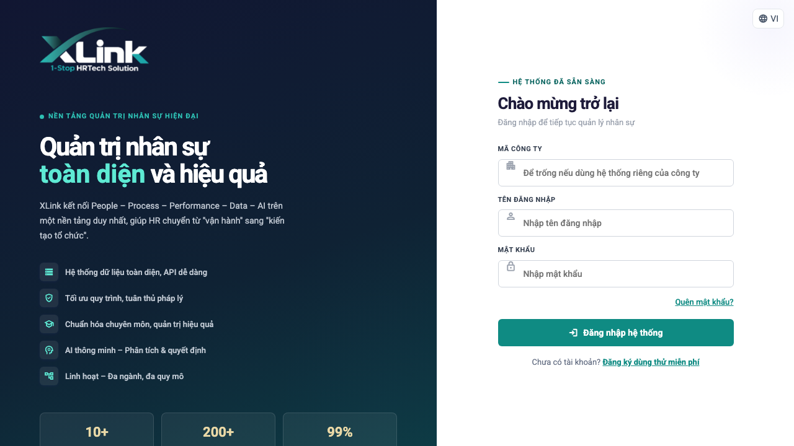
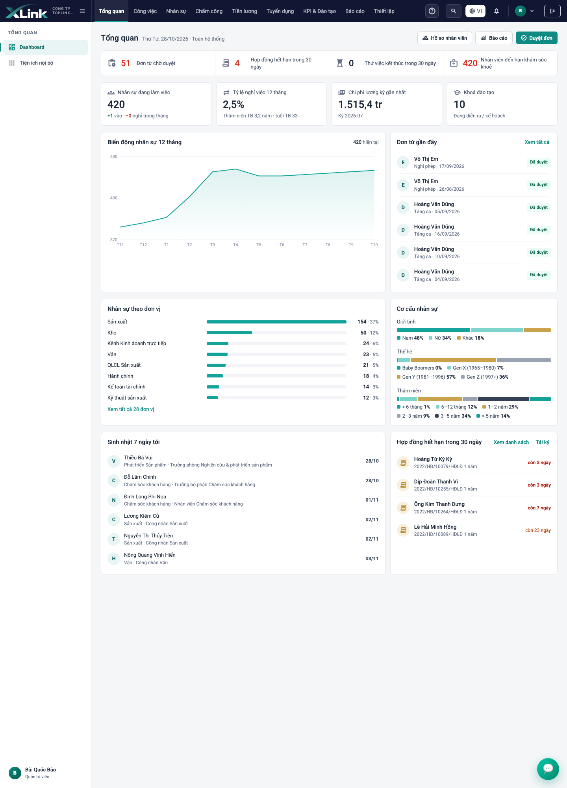
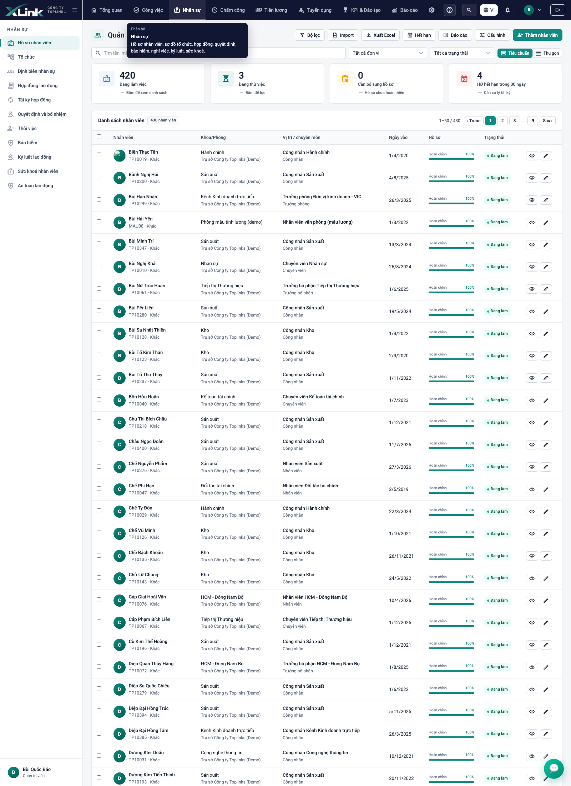
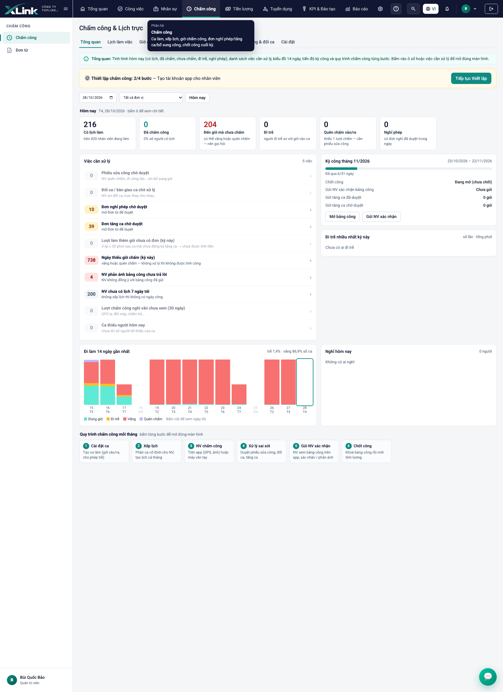
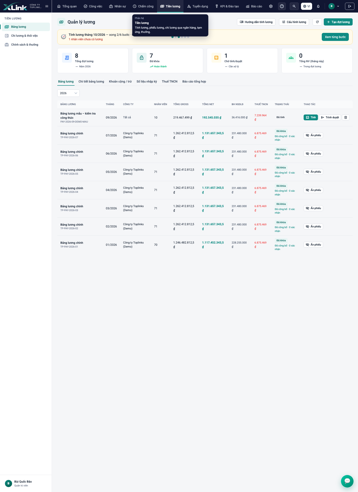
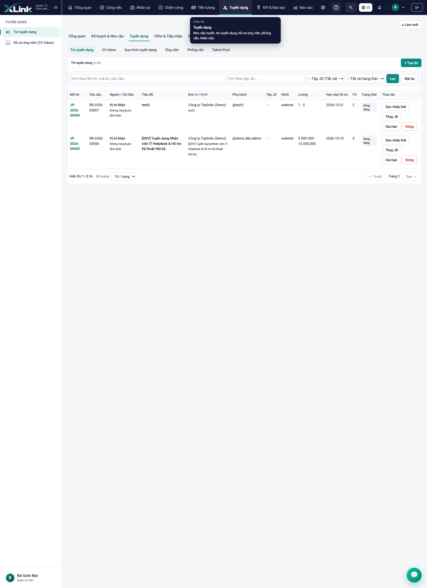
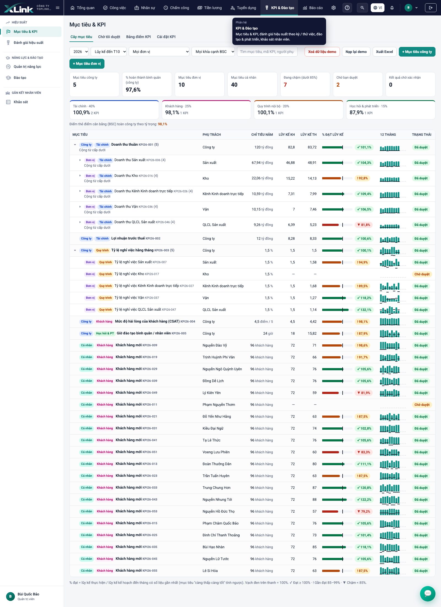
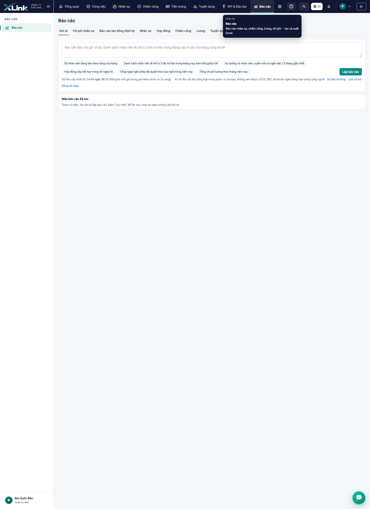
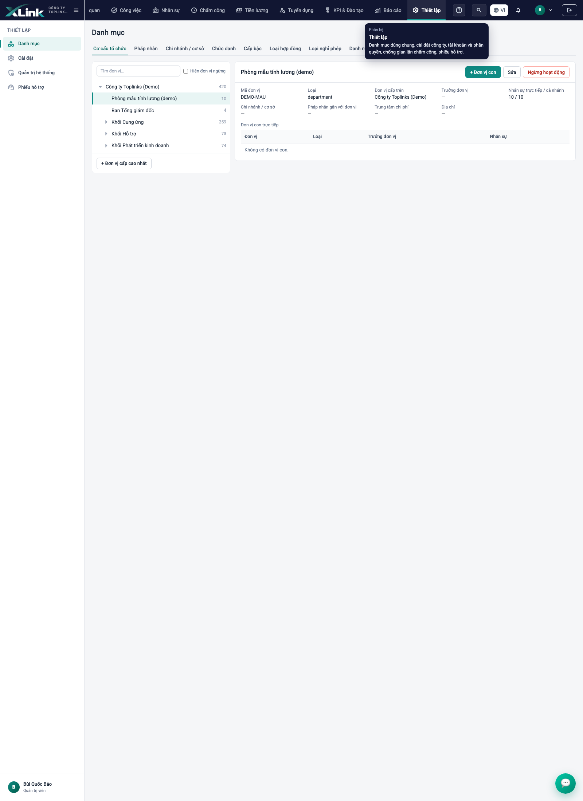
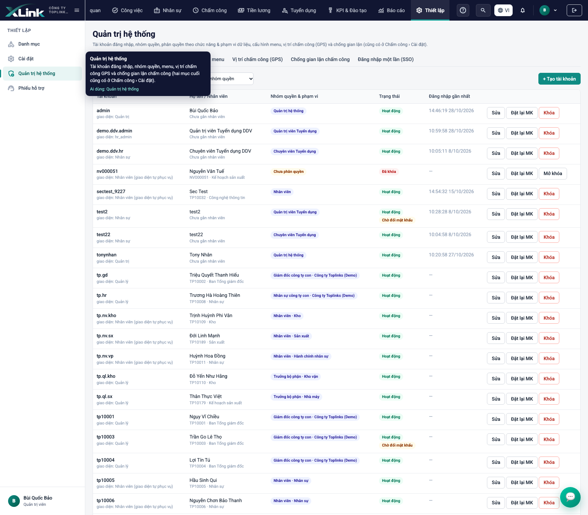
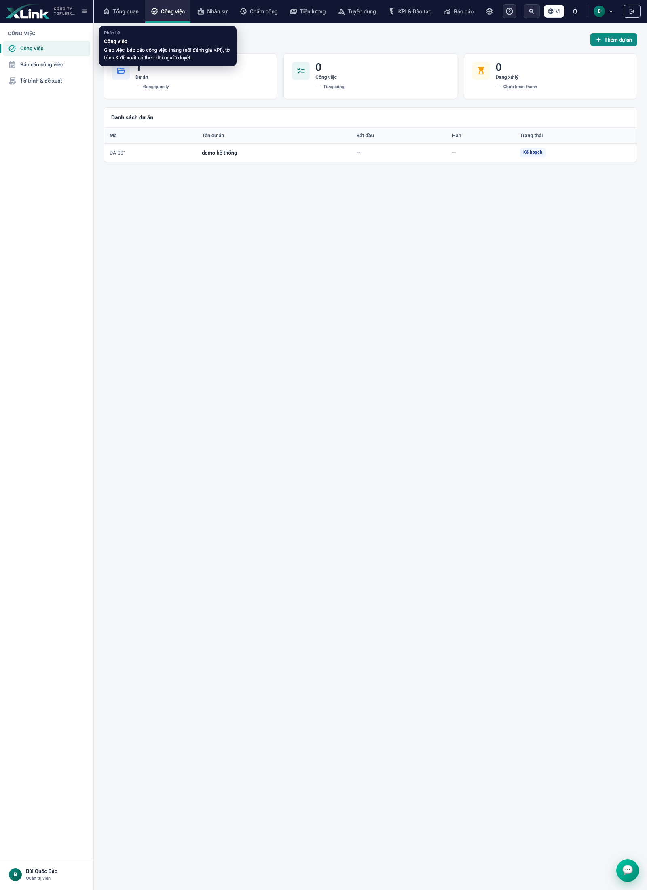